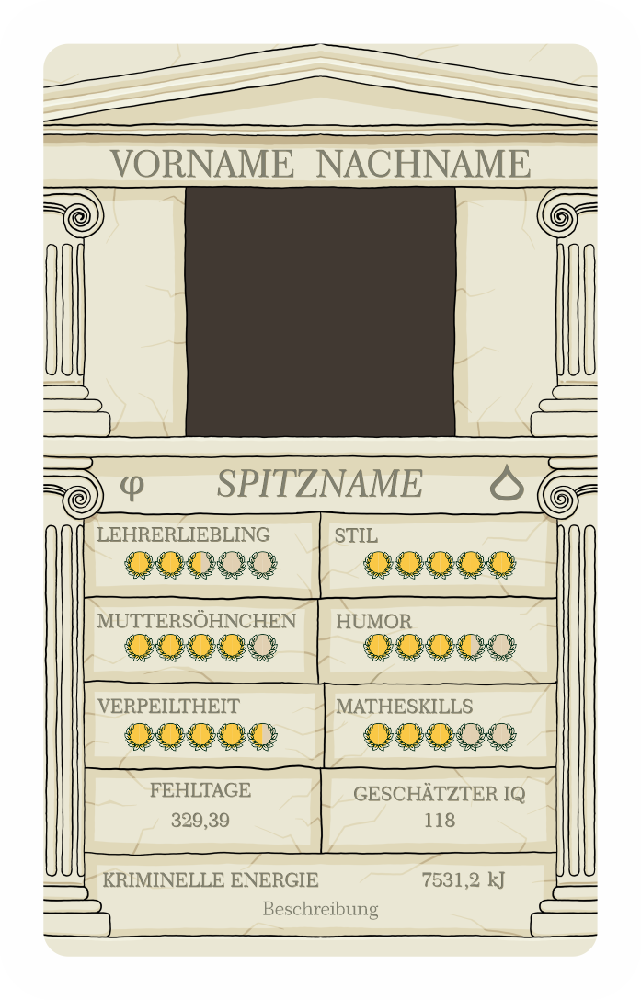

Willkommen auf der offiziellen Internetseite des Jahrgangsquartett™
Inhaltsverzeichnis
1. Inhalt des Kartenspiels
97 Spielkarten, darunter
71 Schülerkarten
26 Lehrerkarten
2 Sonstige Karten:
ein wundervolles Deckblatt + der QR-Code zu dieser Website
ganz viel Liebe ❤
2. Schülerkarten
2.1. Layout
Jede Schülerkarte zeigt einen Schüler und dessen Werte in den verschiedenen Kategorien.
Die Werte für die einzelnen Kategorien wurden hierbei durch Umfragen innerhalb des Jahrgangs ermittelt und von der Redaktion ausgewertet, um das bestmöglichste Spielerlebnis zu garantieren.
2.2. Skalawerte
Werte, die auf einer Skala abgebildet sind, werden im Folgenden „Skalawerte“ genannt. Diese nehmen Werte von 0 bis 10 an, welche jeweils durch einen Halbkreis dargestellt sind. Sollte dieser Bereich aus unerfindlichen Gründen überschritten werden, wird dies durch weitere Halbkreise dargestellt.
2.2. Zahlenwerte
Werte, die genaue Zahlen annehmen, werden im Folgenden „Zahlenwerte“ genannt. Diese haben keinen festgelegten Bereich. Die kriminelle Energie wird dabei um eine Erklärung ergänzt.